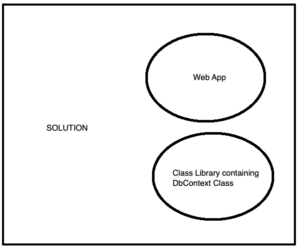

Consider the following Scenario whereby you have a solution with two projects:

To create a migration:
- go into a terminal window inside the Web App
- dotnet ef migrations add M1 --project ../MyClassLibrary/MyClassLibrary.csproj -o Data/Migrations
- in the same Web App terminal window:
- dotnet ef database update